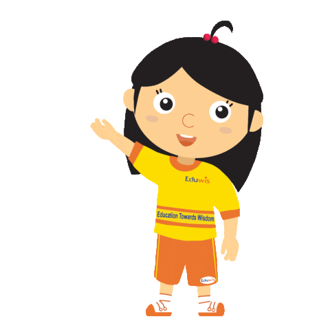

<!DOCTYPE html>
<html>
    <head>
        <title>Study on Line Tracing Task | LPNC</title>


        <!-- Pavlovia -->
        <script type="text/javascript" src="lib/vendors/jspsych-6.0.0/jspsych.js"></script>
      	<link href="lib/vendors/jspsych-6.0.0/css/jspsych.css" rel="stylesheet" type="text/css" />
      	<script type="text/javascript" src="lib/vendors/jspsych-6.0.0/plugins/jspsych-html-keyboard-response.js"></script>
      	<script type="text/javascript" src="lib/vendors/jspsych-6.0.0/plugins/jspsych-image-keyboard-response.js"></script>
      	<script type="text/javascript" src="lib/vendors/jquery-2.2.0.min.js"></script>
      	<script type="text/javascript" src="lib/jspsych-pavlovia-2020.2.js"></script>

        <!-- jsPsych core library and plugins -->
      <script src="jspsych-6.3.0/jspsych.js"></script>
      <script src="jspsych-6.3.0/plugins/jspsych-html-keyboard-response.js"></script>
      <script src="jspsych-6.3.0/plugins/jspsych-image-keyboard-response.js"></script>
      <script src="jspsych-6.3.0/plugins/jspsych-preload.js"></script>
      <script src="jspsych-6.3.0/plugins/jspsych-call_function.js"></script>
      <script src="jspsych-6.3.0/plugins/jspsych-html-button-response.js"></script>
      <script src="jspsych-6.3.0/plugins/jspsych-survey-likert.js"></script>
      <script src="jspsych-6.3.0/plugins/jspsych-fullscreen.js"></script>
      <script src="jspsych-6.3.0/plugins/jspsych-survey-multi-choice.js"></script>
      <script src="jspsych-6.3.0/plugins/jspsych-survey-text.js"></script>
      <script src="jspsych-line-tracing.js"></script>
      <link href="jspsych-6.3.0/css/jspsych.css" rel="stylesheet" type="text/css">

      <!-- Line tracing task -->
      <script src="task/base64.js" type="text/javascript"></script>
      <script src="task/canvas2image.js" type="text/javascript"></script>
      <script src="task/jquery.js" type="text/javascript"></script>
      <script src="task/color_trace.js" type="text/javascript"></script>
      <link rel="stylesheet" href="css/custom.css"></link>

  </head>
  <body></body>

  <script>


/* welcome message */
      var welcome = {
        type: "html-button-response",
        choices: ["&#10095;"],
        stimulus: `
        <p class = "custom-font">Bonjour ! Bienvenue dans ce jeu. <br>
        
        <br>
        Je m'appelle Milo et c'est moi qui vais te guider dans cette nouvelle aventure !</p>
        <br>
        <p class = "continue-instructions">Appuies sur la flèche pour me suivre.</p>
        `,
      };


/* switching to fullscreen */
      var fullscreen = {
        type: 'fullscreen',
        message: `<p class = "custom-font">Pour commencer ce jeu, cliques sur le bouton "Commencer"</p>`,
        button_label: 'Commencer',
        fullscreen_mode: true
      };

/* instructions trial */

      //general1
      var instructions_1 = {
          type: "html-button-response",
          choices: ["&#10095;"],
          stimulus: `
          <p class = "custom-font">Un dessin va apparaître sur l'écran.</p>
          <p class = "custom-font">Tu devras le redessiner le plus précisément possible en bougeant ta souris.</p>
          
          
          <p class = "continue-instructions">Appuies sur la flèche pour continuer.</p>
          `,
            };

      //general2
      var instructions_2 = {
          type: "html-button-response",
          choices: ["&#10095;"],
          stimulus: `
          <p class = "custom-font">Pour commencer le jeu, tu vas devoir cliquer sur le rond vert : c'est le point de départ.</p>
          
          <p class = "custom-font">Un rond rouge va alors apparaître : c'est le point d'arrivée. </p>
          
          <p class = "custom-font">Le but est d'arriver sur le rond rouge en restant le plus possible sur les lignes du dessin.</p>
          <p class = "continue-instructions">Appuies sur la flèche pour commencer le jeu.</p>
          `,
            };

      //general3
      var instructions_3 = {
          type: "html-button-response",
          choices: ["&#10095;"],
          stimulus: `
          <p class = "custom-font">Plus tu resteras sur les lignes du dessin, plus tu gagneras des points.</p>
          <p class = "custom-font">Le but est de gagner le plus de points possible.</p>
          
          
          <p class = "continue-instructions">Appuies sur la flèche pour commencer le jeu.</p>
          `,
            };

      //level1
      var level1 = {
          type: "html-button-response",
          choices: ["&#10095;"],
          stimulus: `
          <p class = "custom-font">Dans ce jeu, il y a aura trois niveaux.</p>
          <p class = "custom-font">Commençons par le premier niveau ! Tu es prêt(e) ?</p>
          
          <p class = "continue-instructions">Appuies sur la flèche pour commencer le jeu.</p>
          `,
            };

      //level2
      var level2 = {
          type: "html-button-response",
          choices: ["&#10095;"],
          stimulus: `
          <p class = "custom-font">Bravo ! Tu as fini le premier niveau.</p>
          <p class = "custom-font">Continuons avec le deuxième niveau ! </p>
          
          <p class = "continue-instructions">Appuies sur la flèche pour commencer le jeu.</p>
          `,
            };

      //level3
      var level3 = {
          type: "html-button-response",
          choices: ["&#10095;"],
          stimulus: `
          <p class = "custom-font">Bravo ! Tu as fini le deuxième niveau.</p>
          <p class = "custom-font">Continuons avec le troisième et dernier niveau ! </p>
          
          <p class = "continue-instructions">Appuies sur la flèche pour commencer le jeu.</p>
          `,
            };


      //training phase 1 : with both visual and score feedback
      // var instructions_all_feedback = {
      //     type: "html-button-response",
      //     choices: ["&#10095;"],
      //     stimulus: `
      //     <p class = "custom-font"> </p>
      //     <p class = "continue-instructions">Appuies sur la flèche pour commencer le jeu.</p>
      //     `,
      //       };


      //training phase 2 : only score feedback
      var instructions_score_feedback = {
          type: "html-button-response",
          choices: ["&#10095;"],
          stimulus: `
          <p class = "custom-font"> A partir de maintenant, le jeu va se compliquer ! </p>
          <p class = "custom-font"> Tu ne verras plus où tu es en train de dessiner ! </p>
          <p class = "custom-font"> Essaies de rester le plus possible sur les lignes ! </p>
          
          <p class = "continue-instructions">Appuies sur la flèche pour commencer le jeu.</p>
          `,
            };

      //test phase without feedback
      var instructions_test = {
          type: "html-button-response",
          choices: ["&#10095;"],
          stimulus: `
          <p class = "custom-font"> A partir de maintenant, le jeu va se compliquer ! </p>
          <p class = "custom-font"> Tu ne verras plus où tu es en train de dessiner, et tu ne verras plus non plus ton score ! </p>
          <p class = "custom-font"> Essaies de rester le plus possible sur les lignes ! </p>
          
          <p class = "continue-instructions">Appuies sur la flèche pour commencer le jeu.</p>
          `,
            };


/* Line tracing task */

// defining the timeline variables

var training_all_feedback_stimuli = [
  // {figure_number: 0, },
  {figure_number: 1, },
  // {figure_number: 2, },
  // {figure_number: 3, },
];

var training_score_feedback_stimuli = [
  // {figure_number: 1, },
  // {figure_number: 1, },
  {figure_number: 2, },
  // {figure_number: 3, },
];

var test_stimuli = [
  // {figure_number: 1, },
  // {figure_number: 1, },
  // {figure_number: 2, },
  {figure_number: 3, },
];

// 1: training phase with visual and score feedback
var training_all_feedback = {
  type: "jspsych-line-tracing",
  figure_number: jsPsych.timelineVariable('figure_number'),
  trace_color: "color",
  score_feedback: true,
  start_instructions: `<p class = "custom-font">Cliques sur le rond vert pour commencer !</p>`,
  draw_instructions: `<p class = "custom-font">Rejoins le rond rouge en restant sur les lignes du dessin</p>`,
  end_instructions: `<p class = "custom-font">Tu as fini ce dessin. Bravo !</p>`,
  stimulus: `<p></p>`,
  prompt: '<p>Appuies sur "y" pour continuer.</p>',
  choices: ['y'],
  data: {},
  on_finish: function(data){
  data_score = data.score * 10;
  data_score_falsed = data_score * 0.9;
  data_score_2d = data_score.toFixed(2);
  data_score_falsed_2d = data_score_falsed.toFixed(2);
}
};

// 2: training phase with score feedback only (no visual feedback)
var training_score_feedback = {
  type: "jspsych-line-tracing",
  figure_number: jsPsych.timelineVariable('figure_number'),
  trace_color: "transparent",
  score_feedback: false,
  cursor_display: true,
  start_instructions: `<p class = "custom-font">Cliques sur le rond vert pour commencer !</p>`,
  draw_instructions: `<p class = "custom-font">Rejoins le rond rouge en restant sur les lignes du dessin</p>`,
  end_instructions: `<p class = "custom-font">Tu as fini ce dessin. Bravo ! </p>`,
  stimulus: `<p></p>`,
  prompt: '<p>Appuies sur "y" pour continuer.</p>',
  choices: ['y'],
  data: {},
  on_finish: function(data){
  data_score = data.score * 10;
  data_score_falsed = data_score * 0.9;
  data_score_2d = data_score.toFixed(2);
  data_score_falsed_2d = data_score_falsed.toFixed(2);
}
};

// 3: test phase : without feedback
var test_phase = {
  type: "jspsych-line-tracing",
  figure_number: jsPsych.timelineVariable('figure_number'),
  trace_color: "transparent",
  score_feedback: false,
  start_instructions: `<p class = "custom-font">Cliques sur le rond vert pour commencer !</p>`,
  draw_instructions: `<p class = "custom-font">Rejoins le rond rouge en restant sur les lignes du dessin</p>`,
  end_instructions: `<p class = "custom-font">Tu as fini ce dessin. Bravo !</p>`,
  stimulus: `<p></p>`,
  prompt: '<p>Appuies sur "y" pour continuer.</p>',
  choices: ['y'],
  data: {},
  on_finish: function(data){
  data_score = data.score * 10;
  data_score_falsed = data_score * 0.9;
  data_score_2d = data_score.toFixed(2);
  data_score_falsed_2d = data_score_falsed.toFixed(2);
}
};

/* Two alternative force choice */

    //2afc
    var twoafc = {
      type: 'html-button-response',
      stimulus: `
      <p class = "custom-font"> Je vais maintenant te montrer deux scores : un seul des deux est le tien.</p>
      <p class = "custom-font">A ton avis, lequel est le tien ? Cliques dessus !</p>
      `,
      choices: [,],
      prompt: "<p></p>",
      on_start: function(twoafc){
        twoafc.choices[0] = Math.round(data_score_2d);
        twoafc.choices[1] = Math.round(data_score_falsed_2d);
      }
    };


/* Confidence scale */
    var scale = [
      "<p class = 'custom-scale'>0 <br> Pas du tout sûr(e) <br><br> </p>",
      "<p class = 'custom-scale'>1 <br> <br><br> </p>",
      "<p class = 'custom-scale'>2 <br> <br><br> </p>",
      "<p class = 'custom-scale'>3 <br> <br><br> </p>",
      "<p class = 'custom-scale'>4 <br> Très sûr(e) <br><br> </p>",
      // "",
    ];

    //confidence training
    var confidence = {
      type: 'survey-likert',
      questions: [
      {prompt: `
        <p class = "custom-font">Maintenant, demandes-toi à quel point tu es sûr(e) que ta réponse est correcte.</p>
        <p class = "custom-25px">Si tu n'es pas du tout sûr(e) de ta réponse, cliques sur "0".</p>
        <p class = "custom-25px">Si tu es vraiment sûr(e) de ta réponse, cliques sur "4".</p>
      `, labels: scale}
      ]
    };


/* Looping the procedure using timeline variables */

// 1: training phase with visual and score feedback
var training_all_feedback_procedure = {
  timeline: [
    training_all_feedback,
    twoafc,
    confidence,
  ],
  timeline_variables: training_all_feedback_stimuli,
  randomize_order: true,
  sample: {
          // without replacement: once a figure is picked, it cannot be picked again
          type: 'without-replacement',
          // number of trials of the procedure
          size: 3,
  }
};

// 2: training phase with score feedback only (no visual feedback)
var training_score_feedback_procedure = {
  timeline: [
    instructions_score_feedback,
    training_score_feedback,
    twoafc,
    confidence,
  ],
  timeline_variables: training_score_feedback_stimuli,
  randomize_order: true,
  sample: {
          // without replacement: once a figure is picked, it cannot be picked again
          type: 'without-replacement',
          // number of trials of the procedure
          size: 3,
  }
};

// 3: test phase : without feedback
var test_procedure = {
  timeline: [
    instructions_test,
    test_phase,
    twoafc,
    confidence,
  ],
  timeline_variables: test_stimuli,
  randomize_order: true,
  sample: {
          // without replacement: once a figure is picked, it cannot be picked again
          type: 'without-replacement',
          // number of trials of the procedure
          size: 3,
  }
};


/*End of the line tracing task*/

    var end_task = {
      type: "html-button-response",
      choices: ["&#10095;"],
      stimulus: `
        <p class = "custom-font">Bravo ! Tu as terminé le jeu et tu t'en es très bien sorti ! Merci d'avoir joué avec moi.</p>
        
        <p class = "custom-font">Avant de partir, j'ai quelques questions pour toi !</p>
        <p class = "continue-instructions">Appuies sur la flèche pour continuer.</p>
        `,
    };


/* Demographic questions*/

    var age = {
       type: 'survey-text',
       questions: [{prompt: "<span class = 'custom-font'>Quel âge as-tu ?</span>"}],
     };

    var sex = {
     type: 'survey-multi-choice',
     questions: [{prompt: "<span class = 'custom-font'>Tu es </span>",
     options: ["Un garçon", "Une fille", "Autre"],
     required: true, horizontal: true}],
     };

     var difficulty = {
      type: 'survey-multi-choice',
      questions: [{prompt: "<span class = 'custom-font'>Comment as-tu trouvé ce jeu ? </span>",
      options: ["Très difficile", "Difficile", "Facile", "Très facile"],
      required: true, horizontal: true}],
      };

    var comments = {
      type: 'survey-text',
      questions: [{prompt: "<p class = 'custom-font'>Cette question s'adresse aux parents. Avez-vous des remarques concernant cet exercice (difficulté de la tâche, motivation de votre enfant...)</p>"}],
      };


/*End of full screen*/

        var fullscreen_exit = {
            type: 'fullscreen',
            fullscreen_mode: false
          };

/*End of study*/

    var ending = {
        type: "html-keyboard-response",
        stimulus: `
        <p class = "custom-font">Merci d'être allé au bout !</p>
        <p class = "custom-font">A bientôt peut être.</p>
        
      `};


/* create timeline */

    var timeline = [];

    //init connection with pavlovia.org//
    var pavlovia_init = {
      type: "pavlovia",
      command: "init"
    };
    timeline.push(pavlovia_init);


    timeline.push(welcome,
                  //fullscreen,
                  level1,
                  instructions_1,
                  instructions_2,
                  instructions_3,
                  training_all_feedback_procedure,
                  level2,
                  training_score_feedback_procedure,
                  level3,
                  test_procedure,
                  end_task,
                  age,
                  sex,
                  difficulty,
                  comments,
                  //fullscreen_exit,
                  ending);


  /* finish connection with pavlovia.org */
	var pavlovia_finish = {
		type: "pavlovia",
		command: "finish",
		participantId: "JSPSYCH-DEMO"
	};
	timeline.push(pavlovia_finish);


  /* start the experiment */
      jsPsych.init({
        timeline: timeline,
        on_finish: function(){
          jsPsych.data.displayData();
        }
        });


   </script>
</html>
